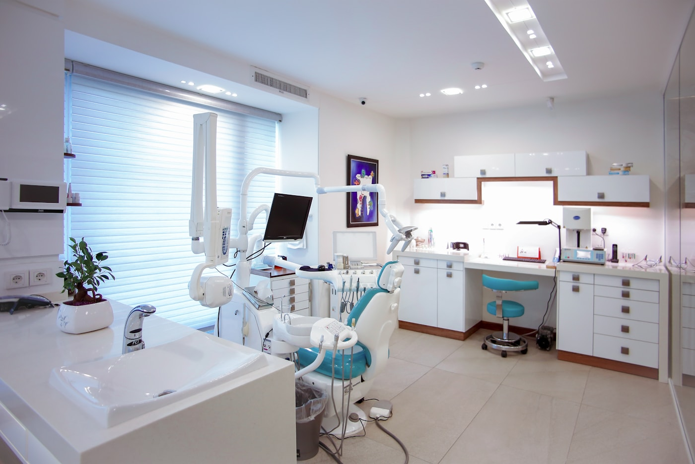
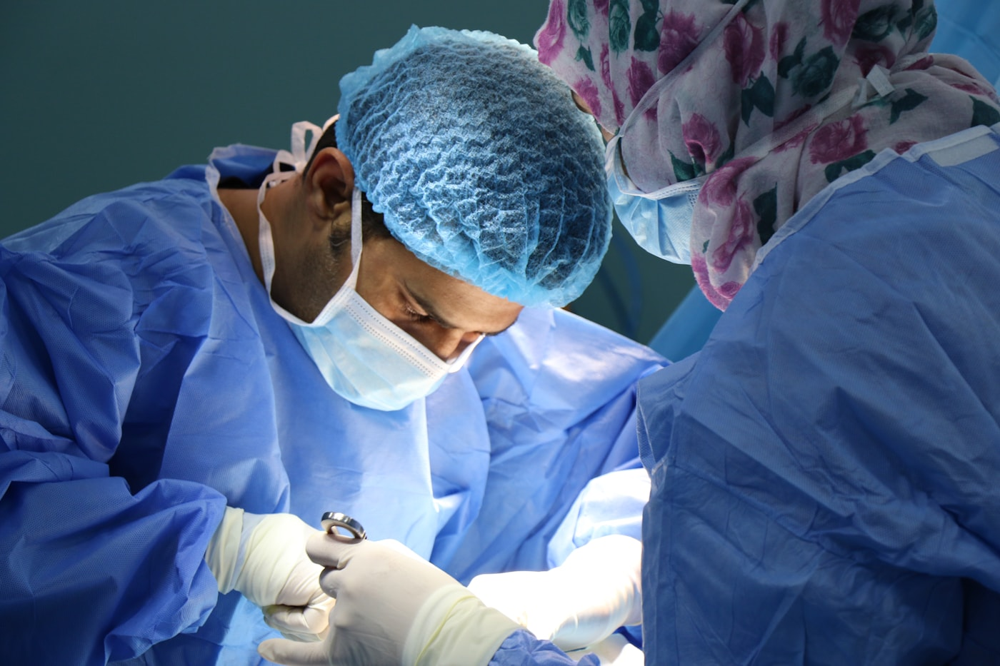

Diagnostic & prevention
Consultation, evaluation et orientation vers le traitement adapte.
Soins et chirurgie bucco-dentaire
Une page claire pour aider les patients de Gombe et Kinshasa a identifier le bon motif, preparer leur visite et contacter le cabinet avec les informations utiles.

Categories de prise en charge
Consultation, evaluation et orientation vers le traitement adapte.
Obturations composite, amalgame ou pulptectomie selon indication.
Devitalisation simple ou molaire avec suivi post-soin.
Extraction simple, molaire ou dent de sagesse.
Detartrage, traitement gingivite et conseils d'hygiene.
Orientation rapide pour douleur, gonflement ou infection suspectee.
Liste de soins
Le site peut afficher les actes courants sans annoncer de prix fixes. Chaque tarif reste confirme au cabinet apres diagnostic, ce qui protege la relation medicale et evite les malentendus.
Demander un avisPremier examen, ecoute du besoin et orientation.
Restauration dentaire apres verification clinique.
Prise en charge plus avancee selon l'etat de la dent.
Traitement endodontique avec explications pre et post-acte.
Simple, molaire ou dent de sagesse selon diagnostic.
Hygiene, inflammation ou infection a traiter sans attente inutile.
Avant et apres la visite
Indiquer la douleur, les antecedents, les traitements en cours et les disponibilites.
Afficher des consignes de prudence et rappeler de contacter le cabinet en cas de signe inquietant.
Mettre en valeur la sterilisation, la desinfection et le materiel moderne cite publiquement.

Parcours patient
Coordonnees, motif et urgence sont clarifies.
Le cabinet confirme l'acte adapte apres examen.
Les protocoles d'hygiene sont explicites et visibles.
Le patient comprend le soin et les consignes.
Rappel et messages pratiques reduisent les oublis.